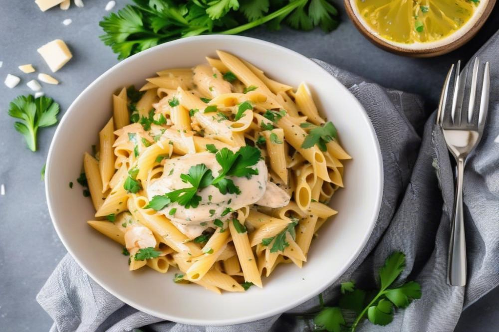

Creamy Chicken Pasta
Welcome to Creamy Chicken Pasta recipe.

See the ingredients below, follow the instructions and enjoy this awesome pasta!
Prep time: 35 minutes
Serving: 4
Ingredients
- 300g pasta.
- 400g chicken breast.
- 1 carton heavy cream.
- 2 minced garlic cloves.
- 1/2 chopped onion.
- 2 tablespoons olive oil.
- 50g grated Parmesan cheese.
- Salt and black pepper to taste.
- Paprika to taste.
- Fresh parsley for garnish.
Instructions
- Cut the chicken breast into small cubes
- Season the chicken with salt, black pepper and paprika.
- Cook the pasta in a pot of salted boiling water according to the package instructions.
- Drain the pasta, reserving a small amount of the cooking water.
- Heat the olive oil in a large skillet and cook the chicken until golden brown.
- Add the onion and garlic and sauté until softened.
- Pour in the heavy cream and stir well.
- Add the Parmesan cheese and stir until the sauce becomes creamy.
- If necessary, add a little pasta water to adjust the sauce consistency.
- Add the cooked pasta to the sauce and toss until well coated.
- Garnish with fresh parsley and serve immediately.
Homepage